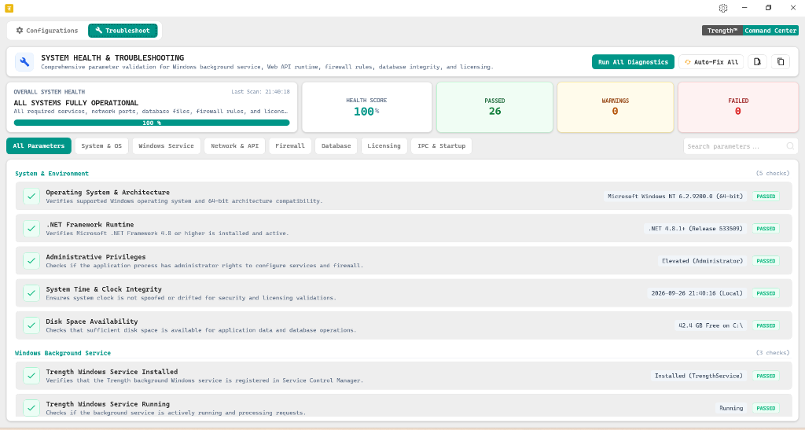

Command Centre: System Health & Troubleshooting
The Troubleshoot module provides comprehensive automated parameter validation for the Windows background service, Web API runtime, firewall rules, local database integrity, and licensing. With one-click diagnostics and automatic repair routines, store operators can ensure 100% operational uptime.
Trength Command Center – System Health & Troubleshooting Console
Live Capture
Health Score & Diagnostic Action Bar
As shown in the top banner of Figure 2, the Command Center aggregates all underlying system dependencies into real-time health metrics alongside instant remediation action triggers:
Diagnostic Control Buttons:
Trigger comprehensive hardware, service, and security checks across the store terminal.ALL SYSTEMS FULLY OPERATIONAL
All required services, network ports, database files, firewall rules, and licensing are active.
Audit Scope & Parameter Checklist
The Command Center checks 26 critical parameters categorized into 7 functional domains. Filter by category tabs or search for specific parameters using the search bar:
System & Environment
5 checks| Operating System & Architecture Verifies supported Windows operating system and 64-bit architecture compatibility. | Microsoft Windows NT 6.2.9200.0 (64-bit) | PASSED | |
| .NET Framework Runtime Verifies Microsoft .NET Framework 4.8 or higher is installed and active. | .NET 4.8.1+ (Release 533509) | PASSED | |
| Administrative Privileges Checks if the application process has administrator rights to configure services and firewall. | Elevated (Administrator) | PASSED | |
| System Time & Clock Integrity Ensures system clock is not spoofed or drifted for security and licensing validations. | 2026-09-26 21:40:16 (Local) | PASSED | |
| Disk Space Availability Checks that sufficient disk space is available for application data and database operations. | 42.4 GB Free on C:\ | PASSED |
Windows Background Service
3 checks| Trength Windows Service Installed Verifies that the Trength background Windows service is registered in Service Control Manager. | Installed (TrengthService) | PASSED | |
| Trength Windows Service Running Checks if the background service is actively running and processing requests. | Running | PASSED | |
| Service Startup & Recovery Mode Ensures service is set to Automatic startup with automatic restart on unexpected crash. | Automatic (Recovery Active) | PASSED |
Other Monitored Subsystems (18 checks)
Network & Web API Runtime:
Validates that TCP port 8082 is open, WebSocket channels accept mobile tablet connections, and local loopback responds within under 2ms.
Windows Firewall Rules:
Checks for active inbound exceptions permitting bidirectional communication over Private and Domain showroom network profiles.
Database Engine & File Locks:
Inspects local SQLite database files for integrity, verifies Write-Ahead Logging (WAL) mode, and checks disk write throughput.
Licensing & Cloud Heartbeat:
Validates that your 16-character store license is recognized by the central license authority and cloud bullion rate synchronization is active.
One-Click Auto-Fix Engine
How "Auto-Fix All" Works:
If any parameter turns FAILED or WARNING during a diagnostic scan, clicking the Auto-Fix All button invokes automated self-healing scripts:
- Service Stopped: Issues Windows Service Control commands to restart
TrengthServiceand set startup mode to Automatic. - Firewall Blocked: Executes `netsh advfirewall` rules to create the necessary Port 8082 inbound rule.
- Database Journal Lock: Releases orphaned transaction write locks and rebuilds corrupted temporary index caches.
- Clock Drift: Synchronizes the local workstation time with the central cloud NTP time servers.